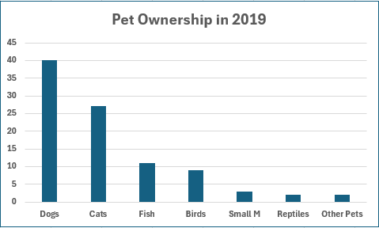
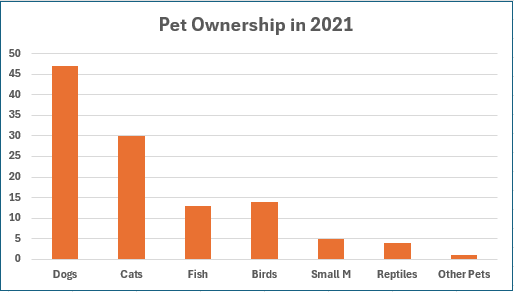
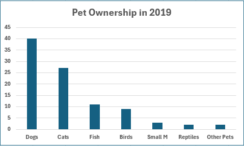
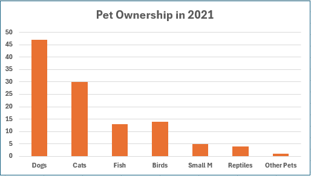

Pet Ownership in Australia
This interactive visualization allows you to explore pet ownership trends across different years. The visualizations provide insights into how pet ownership patterns have evolved over time, including increases or decreases in various types of pets and changes in ownership trends.
 


